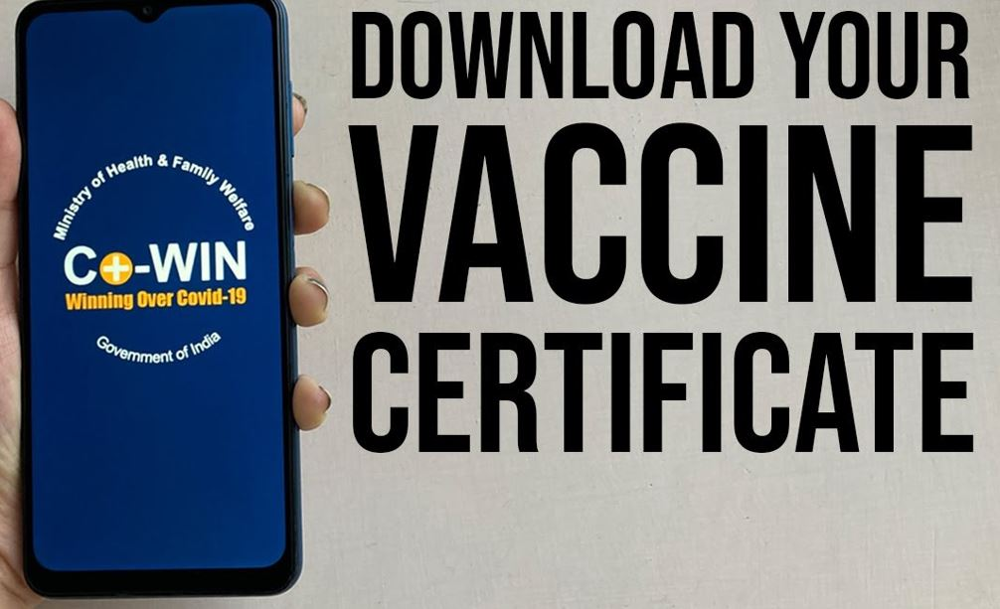

get vaccinated in 3 easy steps

Book an appointment on co-WIN or walk into any vaccination center
How to Book Your Appointment on Co-WIN?
step 1
>>
Get your vaccination safely at the time of your appointment
Dos and Dont's for getting vaccinated
step 2
>>
Download vaccination certificate from Co-WIN and wait for Dose #2
Download your vaccine certificate
step 3